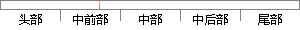

Maven这个单词来自于意第绪语（犹太语），意为知识的积累，最初在Jakata Turbine项目中用来简化构建过程。
片段位置图

相似结果|
相似片段 1：Maven 这个单词来自于意第绪语，意为知识的积累，最早在 Jakata Turbine项目中使用，它最开始被用来简化软件项目的构建过程。Maven 除了拥有程序构建能力外，还提供了高级项目管理工具
相似片段 2：Maven这个单词来自于意第绪语，意为知识的积累，最早在JakataTurbine项目中它开始被用来试图简化构建过程。当时有很多项目，它们的Antbuild文件仅有细微的差别，而JAR文件都由CVS
相似片段 3：单词来自于意大利语，是知识积累的意思，JakataTurbine项目中最早开始试用，以尝试简化构建过程为其宗旨。Maven这个项目的清晰定义包含两层意思：一种是以方便的方式发布项目信息；另一种是在多个
|
※ 片段修改建议 ※
近似词参考：- 知识：常识
- 积累：堆集 积聚 累积
- 中用：顶用
- 过程：进程 历程
系统自动生成语句：Maven这个单词来自于意第绪语（犹太语），意为常识的堆集，最初在Jakata Turbine项目顶用来简化构建进程。
注：本片段修改建议为系统自动生成，仅供参考。